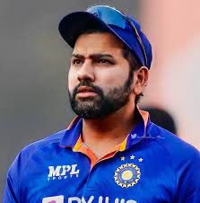
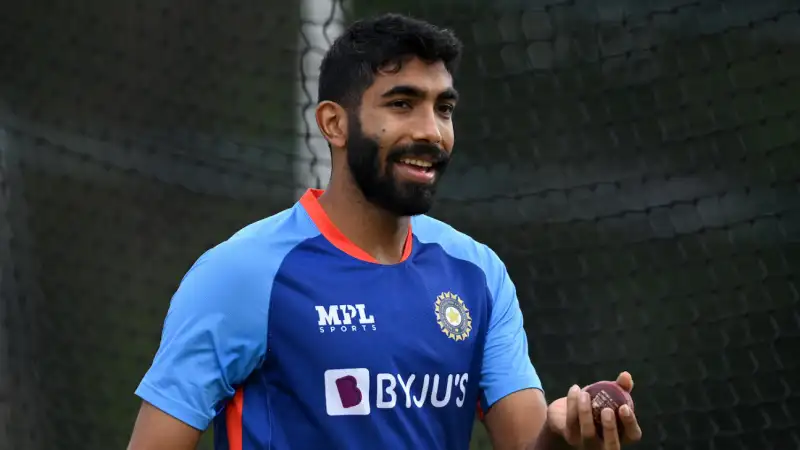

ICC MEN'S CRICKET WORLD CUP 2023 INDIA
Team India Squad
1.ROHIT SHARMA (C)
| The skipper of the Indian Team is HITMAN. He has the role of captain as well as the opening batsman.He is considered one of the best batsmen of his generation and one of the greatest opening batters of all time. Sharma is known for his timing, elegance, six-hitting abilities, and leadership skills. HITMAN already has 5 IPL trophies and 2 ASIA CUP trophies, so hoping we get to see him lifting this ICC Trophy |
2.HARDIK PANDYA (VC)
|
The Vice-Captain of the Indian Team is KUNG-FU PANDYA. He has the role of vice-captain as well as an primary all-rounder of the team. Hardik is currently the only Indian present in the top 10 T20i and ODI All-Rounder rankings. Pandya gives an option for the fifth bowler of the team as well as an impactful batsman in the middle order. Looking forward for his best performance in this World Cup. |
3.VIRAT KOHLI
|
The next player of the Indian Team is KING KOHLI. He has the role of the primary No. 3 Batsman of the team. Virat has amazing stats in this format and has always proved himself vital for the team. Kohli is the only Indian to have achieved No.1 Batsman ranking in all formats. Virat is the backbone of Indian team so hoping to see him scoring big runs for the country. |
4.KL RAHUL
|
The next player of our team is Klassy Rahul. Having the role of middle order batsman and wicket keeper for the team, Rahul has raised the expectations of every Indian by his drastic comeback in the Asia Cup by scoring a century in the very first match after his comeback against Pakistan. Rahul has proved his fitness level through his great keeping dives and confident shots. Rahul’s presence upgrades the strength of the middle order . |
5.SHUBHMAN GILL
|
The next player of the Indian Team is the Prince of World Cricket. Gill is playing the role of the opener of the team along with the skipper Rohit. Shubhman currently is the best ODI batsman India has with a rank of 2 in the world. Shubhman Gill has proved to be consistent and big scorer for the team. So great expectations are held for him. |
6.ISHAN KISHAN
|
The next player of the Team is Pocket Dynamo. Ishan Kishan has made his place as a middle order Batsman in the squad but also is an option for opening batsman. He has got the chance to be in the Indian squad for his great consistency and performance in important phases of the matches. He has great power hitting and stability. He also provides an option for wicket-keeping. |
7.SURYKUMAR YADAV
|
The next player of the Team is SKY. Surya Kumar Yadav also known as Indian 360° has been put in the team as a middle order Batsman. Surya is currently the No.1 T20i Batsman in the world but it was a bit controversial to put him in the ODI World Cup squad as his ODI stats were low. But in the last few matches Surya has proved why he deserved a place in the squad with his special innings for India. Surya is a great player in limited overs format and plays great knocks when the ball gets older. |
8.SHREYAS IYER
|
The next player of the Team is Shreyas Iyer. Coming back from an injury, Iyer is a great option as a middle order Batsman. Iyer has shown great performance for India in ODIs and has recently scored a century against Australia. He is a player who can support a falling inning with his boundaries as well as 1s and 2s. |
9.JASPRIT BUMRAH
|
The next player of the team is Boom-Boom. Jasprit Bumrah, another player who had a comeback from injury in the last month. Bumrah, one of the greatest bowler India ever had, has the role of fast bowler of the team. He has impressed everyone by showing his bowling skills again after a long injury. He has showed his variety bowling and economical spells in the matches. |
10.MOHAMMAD SIRAJ
|
The next player of the Team is Miya-Magic. Mohammad Siraj has also been taken in the team as a fast bowler. He is currently the No.1 Bowler of the World in ODI format and is also going through a great form. Siraj has showed great performance in the Asia Cup and has impressed everyone with his swingy spells. Looking forward to get his outstanding performance in the World Cup |
11.KULDEEP YADAV

|
The next player of the team is Kuldeep Yadav. Having the role of the lead spinner in the Team, Kuldeep is also the only wrist spinner present in the squad. Kuldeep is the highest wicket taker for India in 2023 ODIs. Kuldeep has shown his excellence in the format by taking the crucial wickets for the team in essential phases. |
12.MOHAMMAD SHAMI

|
The next player of the team is Mohammad Shami. Shami has been taken in the squad as a fast bowler. He has great experience in the format and had also played for India a lot and given his best. Shami does great with the new ball as well as takes wickets in the middle overs. |
13.RAVINDRA JADEJA

|
The next player of the team is Sir Jadeja. Ravindra Jadeja is a part of the squad as an all-rounder. Jadeja is going low on his batting stats but as a spinner, he has done really great for the team in his career . His bowling has impressed everyone as he has taken the most crucial wickets in the middle overs as well as he has not allowed the opposition to score more runs in the mid innings. |
14.SHARDUL THAKUR
|
The next player of the team is Lord Shardul. Getting place in the team as an all-rounder, Shardul Thakur has proved him to be one of the finest options for the 5th or 6th bowler of the team as well as a No.8 Batsman. Shardul may not be very economical but always takes wickets for his team. |
15.RAVICHANDRAN ASWHIN

|
The final member of the team is Ash. Getting in the squad in place of Axar Patel (due to his injury), R. Ashwin has proved to be one of the greatest all-rounder India ever had. Ashwin’s bowling has defeated even the best batsmen of the world and he also provides an option for middle order batsman in the team. |
THE END
----page made by Swayam Nanda(<--Click for Github account)